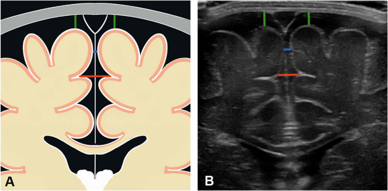
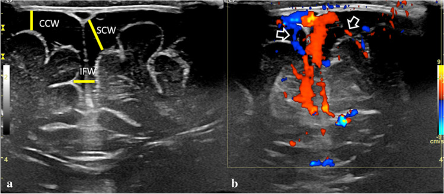
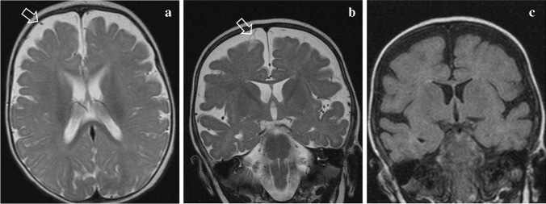
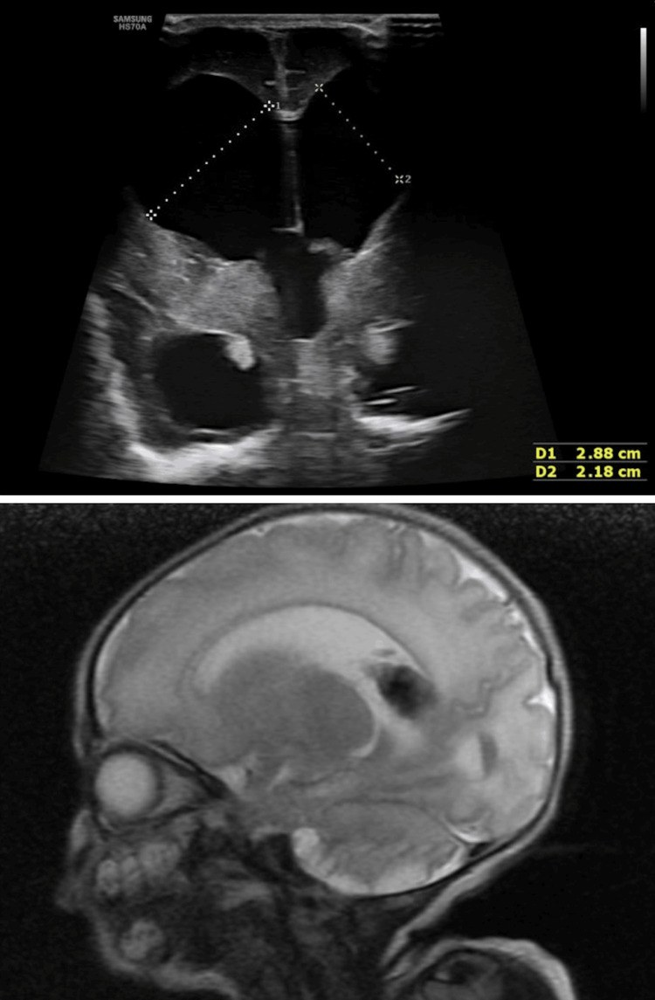

3065 — Đầu to ở nhũ nhi: đo chu vi đầu, siêu âm qua thóp và ngưỡng chuyển MRI / Macrocephaly in infants: head circumference, cranial ultrasound and when to MRI
Tags: pattern:dau-to pattern:gian-nao-thuy pattern:rong-khoang-duoi-nhen pattern:tu-dich-ngoai-truc vung:nao score:percentile protocol:sieu-am-qua-thop protocol:MRI
Mức chắc chắn (certainty): tổng hợp y văn (literature synthesis) — số liệu lấy từ các bài open access đã đọc toàn văn: Accogli et al., Front Pediatr 2021 (PMC8795981, CC BY 4.0 — định nghĩa, thuật toán chẩn đoán, BESS); Raissaki et al., Pediatr Radiol 2023 (PMC10027800, CC BY 4.0 — BESS vs tụ dịch dưới màng cứng, dấu hiệu mạch máu bắc qua); Fandak et al., BMC Pediatr 2024 (PMC11075241, CC BY 4.0 — 359 trẻ lành, bảng bách phân vị khoang dưới nhện 0–19 tháng); Xu et al., Pediatr Radiol 2026 (PMC13430205, CC BY 4.0 — tổng quan hệ thống 24 nghiên cứu, 2.731 trẻ về cách đo khoang dưới nhện); Jain et al., Cureus 2026 (PMC13333149, CC BY 4.0 — hình não úng thủy trên siêu âm đối chiếu MRI). Bài không có ca nguyên văn riêng; ca 1–3 dùng hình minh họa nguyên văn của các nguồn, ghi rõ Fig.
Câu hỏi gốc của bài: bé trai 7 tháng, sinh đủ tháng, phát triển vận động bình thường, mẹ đưa đi khám vì "đầu to hơn các bạn". Chu vi đầu (HC) 47,5 cm — +2,6 SD, đã vượt 2 đường bách phân vị trong 3 tháng. Khám: thóp trước mềm, không căng, không nôn, không lác, không co giật; bố mẹ đầu to tương tự. Vậy: siêu âm qua thóp đủ để kết luận "đầu to lành tính" chưa, cần đo những gì, và khi nào phải chụp MRI?
1. Tổng quan — "đầu to" là triệu chứng, không phải chẩn đoán
A. Định nghĩa và ngưỡng (cửa 1 Argon):
- Đầu to (macrocephaly) = chu vi đầu (occipitofrontal circumference, OFC) > +2 SD (tương đương > bách phân vị 97) so với tuổi và giới. Macrocephaly gặp ở tới 5% trẻ em; khoảng 2–3% trẻ khỏe mạnh có OFC trong khoảng +2 đến +3 SD, nên "đáng lo" được định nghĩa là OFC > +3 SD (PMC8795981).
- Đầu to ≠ não to: megalencephaly là não quá to (thường > +3 SD), gặp trong hơn 200 bệnh di truyền; macrocephaly còn do dịch não tủy (DNT), tụ dịch ngoài trục, khối, hoặc xương sọ (loạn sản xương). Vì vậy cùng một số đo HC có thể là bệnh lành tính hoặc bệnh di truyền nặng — hình ảnh quyết định.
- Đầu to tương đối (relative macrocephaly): HC < +2 SD nhưng không cân xứng với chiều cao/cân nặng (cao và nặng cũng < +2 SD) — vẫn cần đánh giá nếu kèm chậm phát triển.
- Cách đo chuẩn: thước dây qua ụ trán (glabella) và điểm xa nhất của ụ chẩm, 3 lần lấy trị số lớn nhất, cùng một người đo nếu theo dõi; hiệu chỉnh tuổi sinh non tới 24 tháng; vẽ lên biểu đồ WHO/CDC — điều quan trọng không chỉ là vị trí mà là độ dốc (cắt đường bách phân vị).
B. TẠI SAO siêu âm qua thóp là bước đầu, và TẠI SAO nó nhìn được "dịch":
- Vật lý: thóp trước mở tới 12–18 tháng là cửa sổ âm học; DNT không có giao diện phản hồi nên trống âm (anechoic), nhu mô não có hồi âm, mạch máu trong khoang dưới nhện hiện màu trên Doppler. Vì vậy siêu âm phân biệt được dịch – mô – mạch ngay tại giường, không bức xạ, không an thần.
- TẠI SAO BESS gây đầu to: nhung mao màng nhện chưa trưởng thành → hấp thu DNT chậm → DNT ứ trong khoang dưới nhện vùng trán và rãnh liên bán cầu trước; đầu lớn nhanh trong 3–12 tháng (đỉnh ~7 tháng), khoang dưới nhện thu nhỏ dần sau 1–2 tuổi, còn HC ổn định trên đường 95–98 (PMC10027800). Đây là lý do không can thiệp mà chỉ theo dõi.
- TẠI SAO phân biệt với tụ dịch dưới màng cứng lại quan trọng: dịch dưới màng cứng đè lên não, không có mạch bắc qua, và có thể là máu tụ do ngược đãi. Trong BESS, tĩnh mạch cầu bắc ngang toàn bộ khoảng rộng và không có màng nhện nhìn thấy; trong tụ dịch dưới màng cứng xuất hiện đường song song với xương sọ (màng nhện, bình thường không thấy) và mạch bị đẩy sát bề mặt não (PMC10027800).
- TẠI SAO giãn não thủy khác BESS: tắc nghẽn lưu thông → áp lực tăng → giãn não thất + xẹp rãnh vỏ; BESS thì não thất bình thường hoặc chỉ hơi to, rãnh vỏ rộng. Cùng "đầu to" nhưng một bên cần mổ, một bên chỉ theo dõi.
C. Ngưỡng định lượng của khoang dưới nhện (quan trọng nhất khi đọc siêu âm):
| Đại lượng | Ngưỡng / số liệu | Nguồn |
|---|---|---|
| Giới hạn trên bề rộng vỏ–sọ (craniocortical width, CCW) ở trẻ < 1 tuổi | 4–10 mm (trẻ sơ sinh 3,3–5 mm); > 5 mm = rộng, > 10 mm = rộng đáng kể | PMC10027800 |
| Giới hạn trên rãnh liên bán cầu (interhemispheric width, IHW) | 6–8,5 mm; BESS có thể 8–17 mm, khoang dưới nhện trán 6–23 mm | PMC13430205 (tổng hợp Prassopoulos) |
| Nguyên tắc chung | > bách phân vị 95 theo tuổi = bất thường (bảng 0–19 tháng, 359 trẻ lành) | PMC11075241, PMC10027800 |
| BESS — tuổi khởi phát/đỉnh | 3–12 tháng, đỉnh ~7 tháng; khoang dưới nhện thu nhỏ sau 1–2 tuổi | PMC10027800 |
| BESS — phát triển | > 30% có chậm phát triển khi test tâm lý–thần kinh; chậm vận động thô hồi phục ~22 tháng | PMC13430205 |
| BESS + tụ dịch dưới màng cứng | 191 trẻ trong 16 nghiên cứu; 83 được sàng lọc đầy đủ; 28/83 (33,7%) có tổn thương kèm theo (xuất huyết võng mạc/gãy xương) | PMC10027800 |
| Megalencephaly | > +3 SD não; > 200 bệnh di truyền | PMC8795981 |
2. Mẫu hình + chẩn đoán phân biệt theo hình thái (Gamut)
- Giãn não thất + rãnh vỏ XẸP (não thất chiếm ưu thế): não úng thủy tắc nghẽn (hẹp cống Sylvius, Dandy–Walker, Chiari II, sau xuất huyết não thất, khối trong não thất) · não úng thủy thông thương (sau viêm màng não/xuất huyết) · u đám rối mạch mạc (đầu to nhanh + "mắt lặn") · dị dạng tĩnh mạch Galen (đầu to + suy tim cung lượng cao ở sơ sinh).
- Khoang dưới nhện RỘNG + não thất bình thường/hơi to, không đè ép: BESS (lành tính, tự giới hạn) · teo não (não úng thủy ex vacuo — rãnh và não thất cùng rộng, không tăng áp lực) · nang màng nhện (khu trú, một ổ, đẩy não) · thiếu sản hành não/vỏ (hiếm).
- Tụ dịch ngoài trục có hiệu ứng choán chỗ: tụ dịch dưới màng cứng (hygroma, máu tụ bán cấp/mạn) · mủ màng não · tụ máu ngoài màng cứng (thường do chấn thương, hình thấu kính).
- Nhu mô não TO, cấu trúc bình thường hoặc bất thường: NF1 (u thần kinh đệm thị giác, FASI) · Sotos, PTEN/Bannayan–Riley–Ruvalcaba, Fragile X · bệnh chất trắng/loạn dưỡng chất trắng (Alexander, Canavan, megalencephalic leukoencephalopathy) · rối loạn chuyển hóa (glutaric aciduria type 1, mucopolysaccharidosis) · hemimegalencephaly (một bán cầu to, lệch trục).
- Xương sọ to nhưng não bình thường: achondroplasia (trán dô, ngắn chi) · còi xương · loạn sản xương thành xương · thalassemia (giãn tủy xương) · bệnh Paget ở trẻ (hiếm).
- "Đầu to" giả: đầu to gia đình (bố/mẹ cũng to, không triệu chứng) · tóc dày/đo sai · phù đầu · nang da đầu.
Mnemonic "BIG HEAD": BESS/Benign · Increased CSF pressure (hydrocephalus) · Genetic overgrowth (NF1/PTEN/Sotos) · Hemorrhage/subdural · Extra-axial cyst · Achondroplasia/bone · Data error (đo sai/gia đình).
3. Bảng so sánh phân biệt (ma trận đối chiếu)
| Thực thể (entity) | Hình ảnh điển hình (US / CT / MRI) | Chốt vào (rule-in) | Chốt loại (rule-out) | Gợi ý xác nhận |
|---|---|---|---|---|
| BESS (khoang dưới nhện rộng lành tính) | Khoang dưới nhện trán + rãnh liên bán cầu trước rộng, CCW > 5 mm, não thất bình thường/hơi to, mạch bắc qua, không màng nhện | Mạch máu bắc ngang khoảng rộng + không hiệu ứng choán chỗ + HC theo đường 95–98 | Có đường màng nhện + mạch bị đẩy sát não + đè ép → tụ dịch dưới màng cứng | US + Doppler màu; theo dõi HC 1–2 tháng/lần; MRI nếu bất thường |
| Não úng thủy tắc nghẽn | Giãn não thất (sừng trước, sừng thái dương), rãnh vỏ xẹp, có thể thấy mức tắc (cống Sylvius, não thất IV) | Giãn não thất + xẹp rãnh + đầu to nhanh/tăng áp lực | Khoang dưới nhện rộng + não thất bình thường → BESS | US đo não thất; MRI tìm mức tắc; hội chẩn ngoại thần kinh |
| Tụ dịch dưới màng cứng | Dịch dưới màng nhện, đường màng nhện song song xương, mạch bị đẩy sát não, có thể có vách/tỷ trọng khác nhau | Màng nhện nhìn thấy + đè ép não + mạch không bắc qua | Mạch bắc qua toàn bộ + không đè ép → BESS | MRI (T1/T2/FLAIR/T2*) nếu nghi; soi đáy mắt + X-quang xương nếu nghi ngược đãi |
| Megalencephaly do NF1/PTEN/Sotos | Não to, có thể FASI trên T2/FLAIR (NF1), dị dạng mạch; sọ to tương xứng | Da: café-au-lait, u mạch, dày mô mềm + HC > +3 SD | HC +2 đến +3 SD đơn độc, da bình thường → đầu to gia đình/BESS | MRI não; khám da, mắt, di truyền |
| Achondroplasia/loạn sản xương | Trán dô, sọ to, ngắn chi, hẹp lỗ chẩm; não bình thường | Hình dạng xương + chi ngắn + tiền sử gia đình | Tỉ lệ cơ thể bình thường → không phải loạn sản xương | X-quang toàn thân, MRI cổ–chẩm nếu có triệu chứng |
| Nang màng nhện | Một ổ dịch khu trú, đẩy não, không có mạch bắc qua, bờ nhẵn | Ổ khu trú + hiệu ứng choán chỗ + không thông với khoang dưới nhện | Rộng lan tỏa hai bên → BESS | MRI; theo dõi hoặc mổ nếu có triệu chứng |

Sơ đồ (A) và ảnh siêu âm tương ứng (B): CCW = bề rộng vỏ–sọ (xanh lá), IHW = bề rộng rãnh liên bán cầu (xanh dương/đỏ). Đây là ba số đo cần ghi trong mọi ca đầu to. Nguồn: Fandak J et al., BMC Pediatr 2024 (PMC11075241), Fig. 1, CC BY 4.0.4. Protocol siêu âm + chỉ định MRI + theo dõi
A. Siêu âm qua thóp (làm ngay, 10–15 phút):
- Đầu dò: convex 5–8 MHz cho toàn não, linear 7,5–12 MHz (hoặc hockey-stick) cho vùng đỉnh–khoang dưới nhện; thóp trước là cửa sổ chính, thêm thóp sau/mastoid cho hố sau (PMC13333149).
- Mặt cắt tối thiểu: coronal 6 mức (từ trước ra sau: trước sừng trán → lỗ Monro → thể chai → não thất III → trigone → sau cùng) + sagittal đường giữa (thể chai, não thất III/IV, tiểu não) + parasagittal hai bên; đo chiều rộng não thất bên, sừng trước, khoang dưới nhện CCW/IHW.
- Doppler màu vùng đỉnh: xác nhận tĩnh mạch bắc qua khoang dưới nhện (dấu hiệu phân biệt BESS với tụ dịch dưới màng cứng).
- Đo HC ngay trong buổi khám, vẽ biểu đồ, ghi SD/z-score và tốc độ tăng (cm/tháng).
B. Khi nào chuyển MRI (không chờ):
- HC > +3 SD, hoặc cắt ≥ 2 đường bách phân vị, hoặc tăng nhanh bất thường.
- Bất kỳ dấu hiệu thần kinh: chậm phát triển/regression, co giật, lác/lồi mắt, nôn, thóp căng, "mắt lặn" (setting sun), đau đầu.
- Siêu âm bất thường: giãn não thất, khối, bất đối xứng, tụ dịch dưới màng cứng, hố sau không quan sát được.
- Nghi megalencephaly/di truyền: da (café-au-lait, u mạch), dị hình mặt, tiền sử gia đình > 2 người đầu to + chậm phát triển.
- Nghi ngược đãi: tụ dịch dưới màng cứng không rõ nguyên nhân → soi đáy mắt + X-quang xương theo quy trình.
C. Thuật toán một trang:
flowchart TD
A[HC lớn hơn +2 SD hoặc cắt đường bách phân vị] --> B[Đo lại 3 lần, hiệu chỉnh sinh non, vẽ biểu đồ]
B --> C{HC trên +3 SD, cắt 2 đường, hoặc có triệu chứng?}
C -->|Có| D[Siêu âm qua thóp NGAY + hội chẩn]
C -->|Không| E[Siêu âm qua thóp trong 1-2 tuần]
E --> F{Kết quả siêu âm}
F -->|Khoang dưới nhện rộng, mạch bắc qua, não thất bình thường| G[BESS: theo dõi HC mỗi 1-2 tháng, siêu âm lại 3-6 tháng]
F -->|Giãn não thất hoặc rãnh xẹp| H[Nghi não úng thủy: MRI + ngoại thần kinh]
F -->|Tụ dịch dưới màng cứng hoặc khối| I[MRI + đánh giá nguyên nhân, soi đáy mắt nếu nghi ngược đãi]
F -->|Không quan sát được hố sau hoặc bất đối xứng| I
G --> J{HC vẫn cắt đường hoặc chậm phát triển?}
J -->|Có| I
J -->|Không| K[Theo dõi tới 2 tuổi, tư vấn tiên lượng lành tính]
D. Theo dõi và tư vấn:
- BESS: HC tăng nhanh trong 3–12 tháng, khoang dưới nhện giảm sau 1–2 tuổi, HC ổn định song song đường 95–98; giải thích cho gia đình không cần mổ, nhưng vẫn theo dõi phát triển vì > 30% có chậm phát triển nhẹ và chậm vận động thô có thể kéo tới ~22 tháng (PMC13430205).
- Đầu to gia đình: nếu bố/mẹ cũng đầu to, không triệu chứng, phát triển bình thường, siêu âm bình thường → nguy cơ bệnh lý thấp; vẫn đo lại sau 2–3 tháng để xác nhận đường cong.
- Không đo HC một lần rồi kết luận: giá trị tuyệt đối ít ý nghĩa hơn độ dốc và tốc độ.
5. Biến thể bình thường và cạm bẫy
- Đo sai là "nguyên nhân" hay gặp nhất: thước lỏng/qua tóc, lệch glabella, hai người đo khác nhau → chênh 0,5–1 cm đủ đổi 1–2 SD ở nhũ nhi. Đo lại trước khi chụp.
- Đầu to do gia đình và BESS có thể cùng tồn tại: siêu âm bình thường không loại trừ bệnh di truyền — nếu HC > +3 SD hoặc da/dị hình thì vẫn cần MRI/đánh giá di truyền.
- BESS không phải lúc nào cũng "lành": > 30% chậm phát triển; 33,7% trẻ BESS có tụ dịch dưới màng cứng được sàng lọc đầy đủ có tổn thương kèm theo (PMC10027800) — không được bỏ qua soi đáy mắt/X-quang xương khi có tụ dịch.
- Tụ dịch dưới màng cứng có thể xảy ra tự phát trong BESS (do căng giãn tĩnh mạch cầu), nhưng không được mặc định là lành: hình thái đồng nhất, không có cục máu đông đỉnh, tĩnh mạch cầu liên tục, không tổn thương kèm theo mới nghiêng về lành (PMC10027800).
- "Giãn não thất" trên siêu âm có thể là giả: đầu dò đè mạnh, mặt cắt chếch, hoặc não thất hơi to sinh lý ở trẻ sinh non; luôn đo hai bình diện và so bảng theo tuổi.
- Không mổ "não úng thủy" khi thực ra là teo não (ex vacuo): rãnh vỏ rộng cùng não thất, không tăng áp lực → shunt sẽ làm bệnh nặng hơn.
- Hố sau và vùng đỉnh là điểm mù của siêu âm thóp trước: u hố sau, máu tụ dưới màng cứng đỉnh, dị dạng vỏ có thể bỏ sót — MRI khi có triệu chứng hoặc không quan sát được.
- HC lớn nhưng hình dạng bất thường: nghĩ craniosynostosis (đầu dài/hẹp, trán dô) — siêu âm không đủ, cần CT xương sọ 3D và khám ngoại thần kinh.
6. Tự lượng giá — Blind Quiz
Ca 1 — Bé trai 6 tháng, đầu to, phát triển bình thường, bố mẹ cũng đầu to. Siêu âm qua thóp: mặt cắt coronal, có đo khoang dưới nhện.

- Gợi ý: không nôn, không co giật, thóp mềm; HC +2,5 SD, theo đường 97.
- Câu hỏi: Khoảng trống âm rộng ở đâu? Đo CCW/SCW/IHW thế nào? Dấu hiệu nào trên Doppler giúp loại trừ tụ dịch dưới màng cứng?
Bấm để hiện đáp án (findings + chẩn đoán)
- Dấu hiệu: khoang dưới nhện trán và rãnh liên bán cầu trước rộng (CCW, SCW, IFW), não thất bình thường; Doppler màu thấy tĩnh mạch bắc ngang khoảng rộng (mũi tên) và không có đường màng nhện.
- Chẩn đoán: BESS (khoang dưới nhện rộng lành tính) — vì mạch bắc qua, không đè ép não, HC theo đường 95–98; theo dõi, không can thiệp.
- Nguồn ảnh: Raissaki M et al., Pediatr Radiol 2023 (PMC10027800), Fig. 1, CC BY 4.0.
Ca 2 — Bé trai 7 tháng, HC +2,8 SD, có 2 cơn co giật ngắn. MRI T2 axial (a), coronal (b) và T1 coronal (c).

- Gợi ý: da bình thường, không chấn thương; soi đáy mắt không xuất huyết.
- Câu hỏi: Dịch nằm trong khoang nào? Mạch máu đi qua hay bị đẩy sát não? Có cần mổ không?
Bấm để hiện đáp án (findings + chẩn đoán)
- Dấu hiệu: khoang dưới nhện trán và rãnh liên bán cầu rộng, mạch máu bắc ngang (mũi tên), không có màng nhện, không đè ép não; T1 (c) không thấy tụ máu.
- Chẩn đoán: BESS — dịch là DNT trong khoảng dưới nhện, không phải tụ dịch dưới màng cứng; co giật ngắn đơn độc không đủ kết luận bệnh lý, nhưng cần theo dõi phát triển và MRI/EEG nếu tái diễn.
- Nguồn ảnh: Raissaki M et al., Pediatr Radiol 2023 (PMC10027800), Fig. 3, CC BY 4.0.
Ca 3 — Bé gái sinh non 34 tuần, 2 tháng tuổi, đầu to nhanh, thóp căng, "mắt lặn". Siêu âm coronal (trên) và MRI T2 sagittal (dưới).

- Gợi ý: HC vượt +3 SD trong 3 tuần; nôn, lơ mơ.
- Câu hỏi: Não thất có giãn không? Rãnh vỏ xẹp hay rộng? Đây là BESS hay não úng thủy — và bước xử trí?
Bấm để hiện đáp án (findings + chẩn đoán)
- Dấu hiệu: giãn não thất bên rõ (siêu âm đo 2,88 × 2,18 cm), vỏ não mỏng, rãnh xẹp, MRI sagittal xác nhận não thất giãn + mỏng nhu mô.
- Chẩn đoán: não úng thủy (nghi tắc nghẽn) — không phải BESS; cần MRI đầy đủ tìm mức tắc + hội chẩn ngoại thần kinh (dẫn lưu/shunt hoặc nội soi), không chờ.
- Nguồn ảnh: Jain K et al., Cureus 2026 (PMC13333149), Fig. 10, CC BY 4.0.
Bài liên quan chéo
- 600 – Tổng quan Nhi khoa
- 200 – Tổng quan Thần kinh
- 218 – Thoát vị não úng thủy
- 3007 – ETV/ETV-CPC ở trẻ
- 605 – Siêu âm phổi điểm sơ sinh (kỹ thuật siêu âm tại giường ở trẻ)
Không dùng để chẩn đoán độc lập khi chưa có người hướng dẫn.